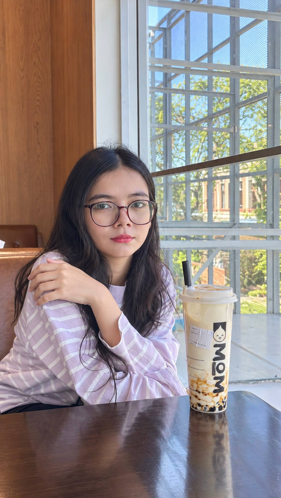
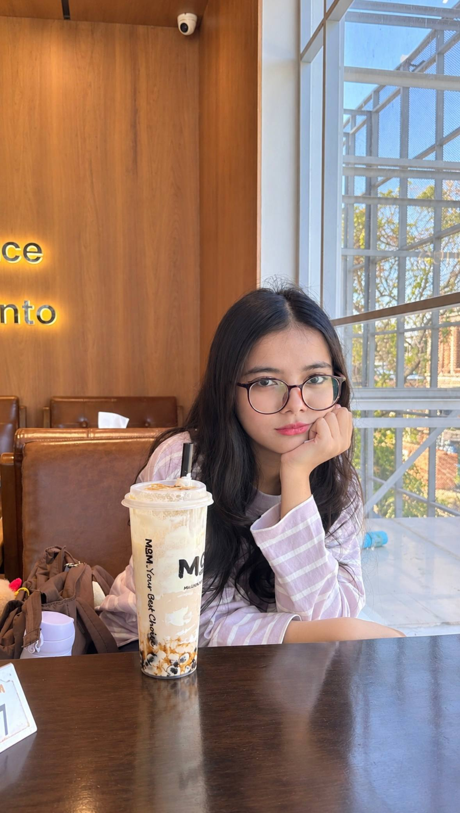

Conversational AI
Speech-driven interaction designed around a companion experience.
Software developer · Mandalay, Myanmar
I’m Shon Lei Zaw, a Computer Science Engineering student, developer, and game-dev educator. I work across connected systems, web platforms and games.

Scroll to see selected work
AI · Robotics · Mobile · Embedded
An AI-powered robot dog designed as a friendly, expressive companion—bringing voice intelligence, motion control, visual personality, and a mobile control experience into one connected system.
What I’m building
Thuta connects a Raspberry Pi voice brain, embedded motion hardware, a Flutter control app, and an animated face display. The project spans product design, software integration, networking, and real hardware constraints.
Speech-driven interaction designed around a companion experience.
Movement, status, chat, and family setup from a Flutter interface.
Animated LCD faces give the robot a readable visual personality.
An active prototype in development. Core software and integrations are being built and tested iteratively; some physical behaviors remain in validation.
A selection from web development, game systems, IoT, and developer tools.
Web platform · Hackathon
A job and internship platform created for Venture Base Hackathon 2025.
Game systems · Education
An AI-powered educational game engine combining interactive learning with game mechanics.
Developer tool
An interactive web simulator that makes CPU instructions easier to explore and understand.
Games
A Java 2D platformer focused on physics, movement, and gameplay systems.
Healthcare web platform with chatbot integration.
Speech-based web assistant in English and Myanmar.
IoT automation system built with connected sensors.
Event management and coordination website.
Java puzzle game demonstrating algorithmic problem solving.
Builder · Teacher · Learner
I study Computer Science Engineering at the Myanmar Institute of Information Technology and build real-world software through projects and Hackathons. I’m especially interested in backend systems, game engines, and applied software engineering.
In 2025, I founded the MIIT GD25 Game Development Club, where I teach Lua and LÖVE2D through hands-on mini-games and mentor first- and second-year students.

Recognition and participation
Recognition for projects that combine technical problem-solving, teamwork, and a clear experience for users.
Thuta - AI Pet Companion Robot
Thuta - AI Pet Companion Robot
Naruto Game · Software-Oriented System
AI for Climate-Resilient Agriculture · EcoOps
Venture Base Hackathon · PathForward Myanmar
Select a certificate to view it in full.
Open to meaningful opportunities